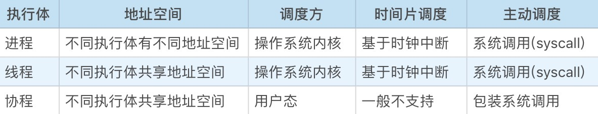
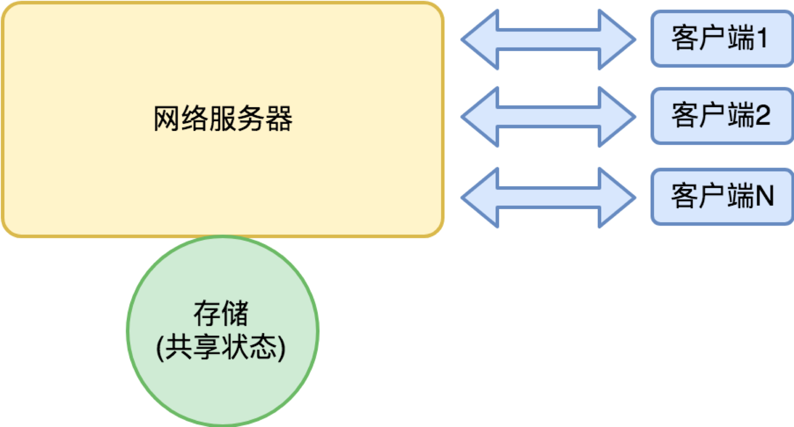
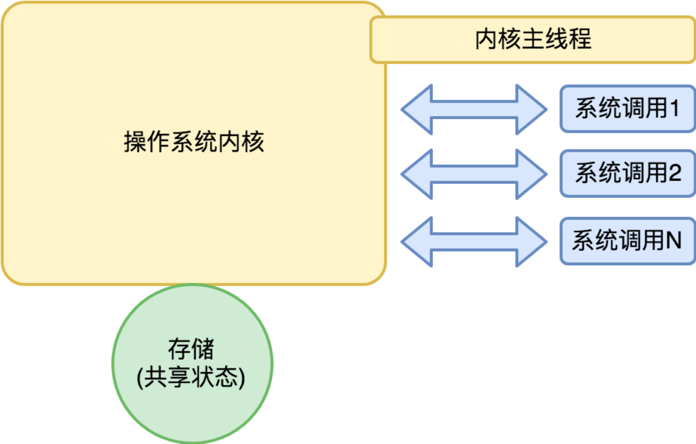

- 00 开篇词 怎样成长为优秀的软件架构师？.md.html
- 01 架构设计的宏观视角.md.html
- 02 大厦基石：无生有，有生万物.md.html
- 03 汇编：编程语言的诞生.md.html
- 04 编程语言的进化.md.html
- 05 思考题解读：如何实现可自我迭代的计算机？.md.html
- 06 操作系统进场.md.html
- 07 软件运行机制及内存管理.md.html
- 08 操作系统内核与编程接口.md.html
- 09 外存管理与文件系统.md.html
- 10 输入和输出设备：交互的演进.md.html
- 11 多任务：进程、线程与协程.md.html
- 12 进程内协同：同步、互斥与通讯.md.html
- 13 进程间的同步互斥、资源共享与通讯.md.html
- 14 IP 网络：连接世界的桥梁.md.html
- 15 可编程的互联网世界.md.html
- 16 安全管理：数字世界的守护.md.html
- 17 架构：需求分析 (上).md.html
- 18 架构：需求分析 (下) · 实战案例.md.html
- 19 基础平台篇：回顾与总结.md.html
- 20 桌面开发的宏观视角.md.html
- 21 图形界面程序的框架.md.html
- 22 桌面程序的架构建议.md.html
- 23 Web开发：浏览器、小程序与PWA.md.html
- 24 跨平台与 Web 开发的建议.md.html
- 25 桌面开发的未来.md.html
- 26 实战（一）：怎么设计一个“画图”程序？.md.html
- 27 实战（二）：怎么设计一个“画图”程序？.md.html
- 28 实战（三）：怎么设计一个“画图”程序？.md.html
- 29 实战（四）：怎么设计一个“画图”程序？.md.html
- 30 实战（五）：怎么设计一个“画图”程序？.md.html
- 31 辅助界面元素的架构设计.md.html
- 32 架构：系统的概要设计.md.html
- 33 桌面开发篇：回顾与总结.md.html
- 34 服务端开发的宏观视角.md.html
- 35 流量调度与负载均衡.md.html
- 36 业务状态与存储中间件.md.html
- 37 键值存储与数据库.md.html
- 38 文件系统与对象存储.md.html
- 39 存储与缓存.md.html
- 40 服务端的业务架构建议.md.html
- 41 实战（一）：“画图”程序后端实战.md.html
- 42 实战（二）：“画图”程序后端实战.md.html
- 43 实战（三）：“画图”程序后端实战.md.html
- 44 实战（四）：“画图”程序后端实战.md.html
- 45 架构：怎么做详细设计？.md.html
- 46 服务端开发篇：回顾与总结.md.html
- 47 服务治理的宏观视角.md.html
- 48 事务与工程：什么是工程师思维？.md.html
- 49 发布、升级与版本管理.md.html
- 50 日志、监控与报警.md.html
- 51 故障域与故障预案.md.html
- 52 故障排查与根因分析.md.html
- 53 过载保护与容量规划.md.html
- 54 业务的可支持性与持续运营.md.html
- 55 云计算、容器革命与服务端的未来.md.html
- 56 服务治理篇：回顾与总结.md.html
- 57 心性：架构师的修炼之道.md.html
- 58 如何判断架构设计的优劣？.md.html
- 59 少谈点框架，多谈点业务.md.html
- 60 架构分解：边界，不断重新审视边界.md.html
- 61 全局性功能的架构设计.md.html
- 62 重新认识开闭原则 (OCP).md.html
- 63 接口设计的准则.md.html
- 64 不断完善的架构范式.md.html
- 65 架构范式：文本处理.md.html
- 66 架构老化与重构.md.html
- 67 架构思维篇：回顾与总结.md.html
- 68 软件工程的宏观视角.md.html
- 69 团队的共识管理.md.html
- 70 怎么写设计文档？.md.html
- 71 如何阅读别人的代码？.md.html
- 72 发布单元与版本管理.md.html
- 73 软件质量管理：单元测试、持续构建与发布.md.html
- 74 开源、云服务与外包管理.md.html
- 75 软件版本迭代的规划.md.html
- 76 软件工程的未来.md.html
- 77 软件工程篇：回顾与总结.md.html
- 加餐 如何做HTTP服务的测试？.md.html
- 加餐 实战：“画图程序” 的整体架构.md.html
- 加餐 怎么保障发布的效率与质量？.md.html
- 热点观察 我看Facebook发币（上）：区块链、比特币与Libra币.md.html
- 热点观察 我看Facebook发币（下）：深入浅出理解 Libra 币.md.html
- 用户故事 站在更高的视角看架构.md.html
- 答疑解惑 想当架构师，我需要成为“全才”吗？.md.html
- 结束语 放下技术人的身段，用极限思维提升架构能力.md.html
- 课外阅读 从《孙子兵法》看底层的自然法则.md.html
- 捐赠
11 多任务：进程、线程与协程
你好，我是七牛云许式伟。
到现在为止，我们已经介绍了操作系统的存储管理：内存与外存；也已经介绍了输入与输出设备的管理。
当然，考虑到输入与输出设备属于人机交互范畴，我们主要会留到下一章 “桌面软件开发” 去详细介绍，这一章，我们仅概要地回顾输入与输出设备的需求演进过程。
CPU + 存储 + 输入与输出，软件开发最基础的内容基本上就都覆盖到了。 今天开始，我们就来聊一聊多任务。
多任务与执行体
多任务的需求是随处可见的。常见的场景，比如我们想边工作边听音乐；又或者我们需要跑一个后台监控程序，以报告随时可能发生的异常。
那么，怎么才能做到多任务？
我们先从物理层面看。最早期的 CPU 基本上都是单核的，也就是同一时间只能执行一条指令。尽管如此，大家可能都听过 “摩尔定律”，简单地说就是，每隔一年半到两年，同样的钱能买到的计算力能够翻一倍。
这当然不是什么严谨的物理学定律，更多的是一定历史时期下的经验之谈。早期 CPU 工艺的发展，基本上是通过提高电子元器件的密集程度实现的；但是电子元器件大小总归有个极限，不可能无限小下去。
那么怎么办？不能更小的话，那就横向多铺几个，一颗 CPU 多加几颗核心。这样多核技术就出现了。多核的意思是说，单核速度我提不上去了，多给你几个，价格一样。
所以物理层面的多任务，有两个方法：一个是多颗 CPU，一个是单颗 CPU 多个核心。
在桌面端，大多数情况用的是后者，因为桌面端的产品（个人计算机、手机、手表等）还是很在意产品的体积如何尽可能做得更小；而服务器领域，通常同时使用两者，它更多关注的是如何尽可能提升单台计算机的计算力密度。
但如果我们实际就只有一个单核的 CPU，是否就没办法实现多任务呢？
当然可以。方法是把 CPU 的时间切成一段段时间片，每个时间片只运行某一个软件。这个时间片给软件 A，下一个时间片给软件 B。因为时间片很小，我们会感觉这些软件同时都在运行。这种分时间片实现的多任务系统，我们把它叫分时系统。
分时系统的原理说起来比较简单，把当前任务状态先保存起来，把另一个任务的状态恢复，并把执行权交给它即可。这里面涉及的问题有：
- 任务是什么，怎么抽象任务这样一个概念；
- 任务的状态都有什么？怎么保存与恢复；
- 什么时机会发生任务切换？
从今天的现实看，任务的抽象并不是唯一的。大部分操作系统提供了两套：进程和线程。有的操作系统还会提供第三套叫协程（也叫纤程）。
我个人喜欢统一用来 “执行体” 一词来统称它们。所谓执行体，是指可被 CPU 赋予执行权的对象，它至少包含下一个执行位置（获得执行权后会从这里开始执行）以及其他的运行状态。
任务的状态都有什么？
从 CPU 的角度，执行程序主要依赖的是内置存储：寄存器和内存（RAM），它们构成执行体的上下文。
先看寄存器。寄存器的数量很少且可枚举，我们直接通过寄存器名进行数据的存取。
在我们把 CPU 的执行权从软件 A 切换到软件 B 的时候，要把软件 A 所有用到的寄存器先保存起来（以便后续轮到软件 A 执行的时候恢复），并且把寄存器的值恢复到软件 B 上一次执行时的值，然后才把执行权交给软件 B。
这样，在软件 A 和 B 的视角看来，它们好像一直都是独自在使用 CPU，从未受到过其他软件的打扰。
我们再看内存（RAM）。CPU 在实模式和保护模式下的内存访问机制完全不同，我们分别进行讨论。在实模式下，多个执行体同在一个内存地址空间，相互并无干扰（非恶意情况下）。
在保护模式下，不同任务可以有不同的地址空间，它主要通过不同的地址映射表来体现。怎么切换地址映射表？也是寄存器。
所以，总结就一句话：执行体的上下文，就是一堆寄存器的值。要切换执行体，只需要保存和恢复一堆寄存器的值即可。 无论是进程、线程还是协程，都是如此。
进程与线程
那么，不同的执行体究竟有何不同？为何会出现不同种类的执行体？

进程是操作系统从安全角度来说的隔离单位，不同进程之间基于最低授权的原则。
在创建一个进程这个事情上，UNIX 偷了一次懒，用的是 fork（分叉）语义。所谓 fork，就是先 clone 然后再分支，父子进程各干各的。
这样创建进程很讨巧，不用传递一堆的参数，使用上非常便利。但我认为从架构设计的角度，这是 UNIX 操作系统设计中最糟糕的 API，没有之一。而更不幸的是 Linux 把这一点继承下来了。
为什么进程 fork 是糟糕的？这是因为：进程是操作系统最基本的隔离单元，我们怕的就是摘不清楚，但是 fork 偏偏要藕断丝连。
这一点 Windows 要清晰很多，哪些文件句柄在子进程中还要用到，一一明确点名，而不是 fork 一下糊里糊涂就继承过去了。
事实上我个人那么多年工程经验表明，除了会接管子进程的标准输入和标准输出，我们几乎从来不会通过向子进程传递文件句柄来通讯。
所以 fork 这种传递进程上下文的方式，是彻头彻尾的一次过度设计。甚至严重一点说，是设计事故。
线程的出现，则是因为操作系统发现同一个软件内还是会有多任务的需求，这些任务处在相同的地址空间，彼此之间相互可以信任。
从线程角度去理解 UNIX 的 fork，能够稍微理解一些设计者们当年的考量。
早期操作系统中没有线程的概念，也不会有人想到要搞两套执行体。所以进程实际上承担了一部分来自线程的需求：我需要父进程的环境。
协程与goroutine
协程并不是操作系统内核提供的，它有时候也被称为用户态线程。这是因为协程是在用户态下实现的。如果你感兴趣，也可以自己实现一个。
但为什么会出现协程呢？看起来它要应对的需求与线程一样，但是功能比线程弱很多？
答案是因为实现高性能的网络服务器的需要。对于常规的桌面程序来说，进程+线程绰绰有余。 但对于一个网络服务器，我们可以用下面这个简单的模型看它：

对网络服务器来说，大量的来自客户端的请求包和服务器的返回包，都是网络 IO；在响应请求的过程中，往往需要访问存储来保存和读取自身的状态，这也涉及本地或网络 IO。
如果这个网络服务器有很多客户，那么整个服务器就充斥着大量并行的 IO 请求。
操作系统提供的标准网络 IO 有以下这些成本：
- 系统调用机制产生的开销；
- 数据多次拷贝的开销（数据总是先写到操作系统缓存再到用户传入的内存）；
- 因为没有数据而阻塞，产生调度重新获得执行权，产生的时间成本；
- 线程的空间成本和时间成本（标准 IO 请求都是同步调用，要想 IO 请求并行只能使用更多线程）。
在一些人心目中会有一个误区：操作系统的系统调用很慢。这句话很容易被错误地理解为系统调用机制产生的开销很大。
但这是很大的误解。系统调用虽然比函数调用多做了一点点事情，比如查询了中断向量表（这类似编程语言中的虚函数），比如改变 CPU 的执行权限（从用户态跃迁到内核态再回到用户态）。
但是注意这里并没有发生过调度行为，所以归根结底还是一次函数调用的成本。怎么理解操作系统内核我们示意如下：

从操作系统内核的主线程来说，内核是独立进程，但是从系统调用的角度来说，操作系统内核更像是一个多线程的程序，每个系统调用是来自某个线程的函数调用。
为了改进网络服务器的吞吐能力，现在主流的做法是用 epoll（Linux）或 IOCP（Windows）机制，这两个机制颇为类似，都是在需要 IO 时登记一个 IO 请求，然后统一在某个线程查询谁的 IO 先完成了，谁先完成了就让谁处理。
从系统调用次数的角度，epoll 或 IOCP 都是产生了更多次数的系统调用。从内存拷贝来说也没有减少。所以真正最有意义的事情是：减少了线程的数量。
既然不希望用太多的线程，网络服务器就不能用标准的同步 IO（read/write）来写程序。知名的异步 IO 网络库 libevent 就是对 epoll 和 IOCP 这些机制包装了一套跨平台的异步 IO 编程模型。
Node.js 一炮而红，也是因为把 JavaScript 的低门槛和 libevent 的高性能结合起来，给了前端程序员一个“我也能搞高性能服务器”的梦想。
但是异步 IO 编程真的很反人类，它让程序逻辑因为 IO 异步回调函数而碎片化。我们开始怀念写同步 IO 的那些日子了。
让我们再回头来看：我们为什么希望减少线程数量？因为线程的成本高？我们分析一下。
首先，我们看下时间成本。它可以拆解为：
- 执行体切换本身的开销，它主要是寄存器保存和恢复的成本，可腾挪的余地非常有限；
- 执行体的调度开销，它主要是如何在大量已准备好的执行体中选出谁获得执行权；
- 执行体之间的同步与互斥成本。
我们再看线程的空间成本。它可以拆解为：
- 执行体的执行状态；
- TLS（线程局部存储）；
- 执行体的堆栈。
空间成本是第一根稻草。默认情况下 Linux 线程在数 MB 左右，其中最大的成本是堆栈（虽然，线程的堆栈大小是可以设置的，但是出于线程执行安全性的考虑，线程的堆栈不能太小）。
我们可以算一下，如果一个线程 1MB，那么有 1000 个线程就已经到 GB 级别了，消耗太快。
执行体的调度开销，以及执行体之间的同步与互斥成本，也是一个不可忽略的成本。虽然单位成本看起来还好，但是盖不住次数实在太多。
我们想象一下：系统中有大量的 IO 请求，大部分的 IO 请求并未命中而发生调度。另外，网络服务器的存储是个共享状态，也必然伴随着大量的同步与互斥操作。
综上，协程就是为了这样两个目的而来：
- 回归到同步 IO 的编程模式；
- 降低执行体的空间成本和时间成本。
但是，大部分你看到的协程（纤程）库只是一个半吊子。它们都只实现了协程的创建和执行权的切换，缺了非常多的内容。包括：
- 协程的调度；
- 协程的同步、互斥与通讯；
- 协程的系统调用包装，尤其是网络 IO 请求的包装。
这包含太多的东西，基本上你看到的服务端操作系统所需的东西都要包装一遍。而且，大部分协程库，连协程的基础功能也是半吊子的。这里面最难搞的是堆栈。
为什么协程的堆栈是个难题？因为，协程的堆栈如果太小则可能不够用；而如果太大则协程的空间成本过高，影响能够处理的网络请求的并发数。理想情况下，堆栈大小需要能够自动适应需要。
所以，一个完备的协程库你可以把它理解为用户态的操作系统，而协程就是用户态操作系统里面的 “进程”。
这世界上有完备的协程库么？有。有两个语言干了这事儿：Erlang 和 Go 语言。Erlang 语言它基于虚拟机，但是道理上是一致的。Go 语言里面的用户态 “进程” 叫 goroutine。它有这样一些重要设计：
- 堆栈开始很小（只有 4K），但可按需自动增长；
- 坚决干掉了 “线程局部存储（TLS）” 特性的支持，让执行体更加精简；
- 提供了同步、互斥和其他常规执行体间的通讯手段，包括大家非常喜欢的 channel；
- 提供了几乎所有重要的系统调用（尤其是 IO 请求）的包装。
架构师的批判性思维
多任务的需求非常复杂。
为了满足需要，人们不只发明了三套执行体：进程、线程和协程，还发明了各种五花八门的执行体间的通讯机制（可以参考 “[08 | 操作系统内核与编程接口]” 中我们给出的表格）。有一些执行体间的通讯机制在逐渐消亡，退出历史舞台。
操作系统内核之中，不乏无数精妙的设计思想。但是，前辈们也并非圣贤，也可能会出现一些决策上失误，留下了诸多后遗症。
这非常正常。操作系统内核是非常庞大而复杂的基础软件。它并不像计算机基础体系结构，简洁优雅。
对 CPU 而言，统一的、接口一致的输入输出设备，到了操作系统这里，它需要依据每一种设备的需求特性，抽象出对应的更加用户友好的使用接口。这个工作既繁重，又需要极强的预见性。
而作为后辈的我们，在体会这些精妙的设计思想的同时，也要批判性去吸收。日常我们天天依赖于这些基础架构，受到它们的影响与约束，这些实在是最佳的学习材料。
结语
今天我们重点介绍了多任务，以及多任务带来的复杂需求，由此介绍了进程、线程和协程等三套执行体的设计。后面我们还会分进程内和进程间来介绍进程的通讯机制。
执行体的设计，有非常多值得反思的地方。UNIX 的 fork API 是否是一个好的设计？线程的设计是否成功？如果线程的设计是优良的，是不是就不再有 Go 语言这种在用户态重造执行体和 IO 子系统的必要性？
如果你对今天的内容有什么思考与解读，欢迎给我留言，我们一起讨论。如果你觉得有所收获，也欢迎把文章分享给你的朋友。感谢你的收听，我们下期再见。
© 2019 - 2023 Liangliang Lee. Powered by gin and hexo-theme-book.